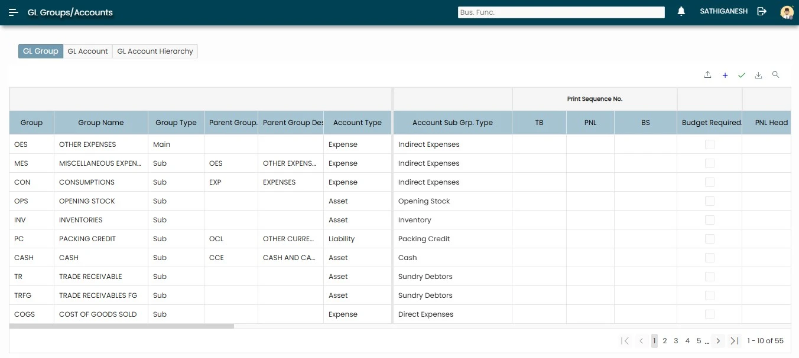
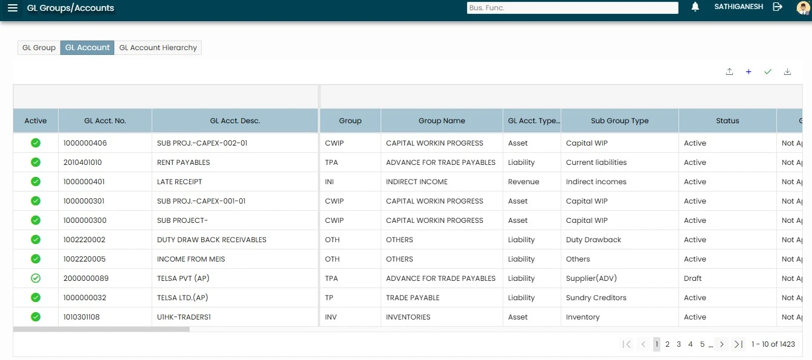
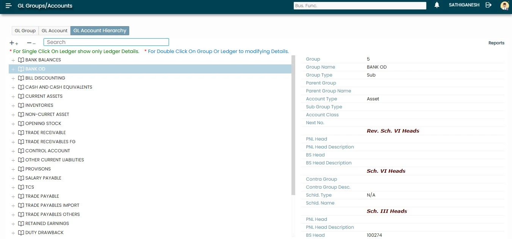
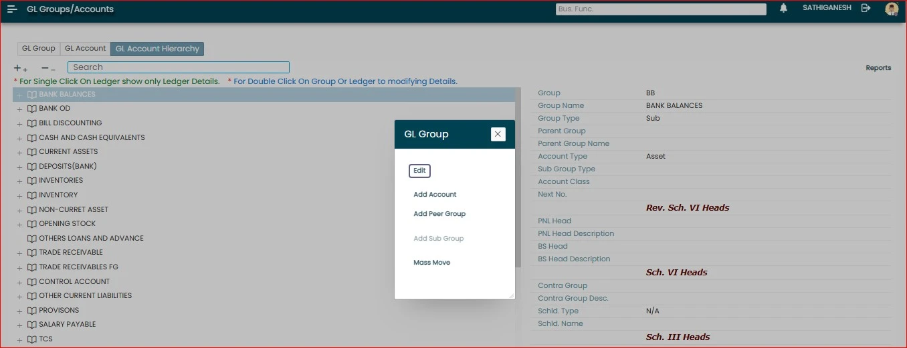

<div data-category="Financials" data-title="GL Accounts" data-updated="December 01, 2025" data-contributors="RoadmapIT" data-breadcrumb="Home,Financials,GL Accounts">
  <div class="page-content">
    <p>To record the transaction and to trial balance chart of accounts needs to be created, which are posted in GL Account.</p>
    <p>This screen used to create the GL groups and accounts.</p>
    <h5>Navigation path:</h5>
    <p class="fs-6">Financials \ Setup \ CPC/GL account \ GL Group/Accounts</p>
    
    <ul style="list-style-type: none; align-content: center">
      <li class="mouse-icon">
        Click
        <i class="bi bi-plus fs-4 mx-2 text-primary"></i>
        to add GL Group.
      </li>
      <li class="mouse-icon">Enter the group ID.</li>
      <li class="mouse-icon">Enter/Select the group description.</li>
      <li class="mouse-icon">Select the Acct. Group & Select the account type for the groups.</li>
      <li class="mouse-icon">Enter/Select the parent group if the Acct. group is Sub and Save the Entry.</li>
      <li class="mouse-icon">Account sub group into several types. Based on this, accounts will be displayed in LOV.</li>
      <li class="mouse-icon">
        Click
        <i class="bi bi-check-lg fs-4 mx-2 text-success"></i>
        to save.
      </li>
    </ul>
    <h2>GL Accounts</h2>
    <p>This screen is used to create the account.</p>
    
    <ul style="list-style-type: none; align-content: center">
      <li class="mouse-icon">
        Click
        <i class="bi bi-plus fs-4 mx-2 text-primary"></i>
        to add GL Account
      </li>
      <li class="mouse-icon">Enter the Account ID and Account Description</li>
      <li class="mouse-icon">Select the Group from LOV</li>
      <li class="mouse-icon">All GL accounts can be displayed either as Active status or Inactive status or in New status.</li>
      <li class="mouse-icon">By default active state account displays an Acct. type, PNL / BS, Customer and supplier. If want to do any changes, click required LOV and change it.</li>
      <li class="mouse-icon">
        Click
        <i class="bi bi-check-lg fs-4 mx-2 text-success"></i>
        to save
      </li>
    </ul>
    <h2>GL Accounts Hierarchy</h2>
    <p>This screen is view the Hierarchy of the GL Accounts.</p>
    
    <ul style="list-style-type: none; align-content: center">
      <li class="mouse-icon">Double click on the GL Account and the option to edit/ add will be displayed.</li>
    </ul>
    
    <ul style="list-style-type: none; align-content: center">
      <li class="mouse-icon">Edit - the existing GL account can be edited accordingly.</li>
      <li class="mouse-icon">Add Account - An account can be added inside the existing group.</li>
      <li class="mouse-icon">Add peer Group - An peer group can be added inside of the already existing group.</li>
      <li class="mouse-icon">Add Subgroup - An subgroup can be added under the existing group.</li>
      <li class="mouse-icon">Mass Move - the list of accounts can be migrated from one group to another group using this option.</li>
    </ul>
  </div>
</div>
